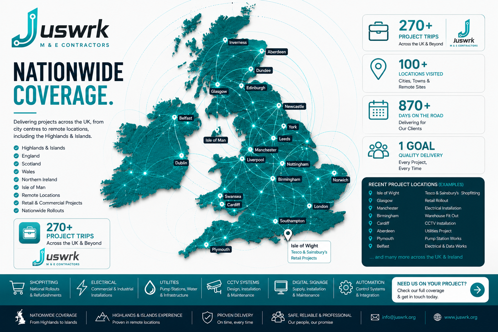

M & E Contractors · Nationwide Delivery
Engineering delivery without the noise.
Juswrk supports national retail rollouts, commercial electrical works, utilities, CCTV, automation and specialist site delivery across the UK.

270+Project trips
100+Locations visited
UK-wideHighlands & Islands
1 goalQuality delivery
Core sectors
Built around real project experience.
Featured
National Shopfitting Rollouts
Hundreds of store visits, refreshes, gondola builds, racking, lighting rafts and till works.
CommercialElectrical
Installation, upgrades, testing, temporary systems and industrial support.
InfrastructureUtilities & Water
Pump stations, flow testing, NRVs, refurbishments and operational improvements.
SecurityCCTV Systems
Design, installation, upgrades and multi-site deployment.
ControlsAutomation
PLC, SCADA, monitoring and control integration.
RetailDigital Signage
Supply, installation, configuration and national rollout support.